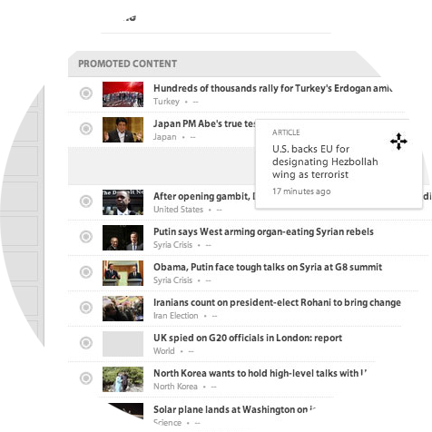
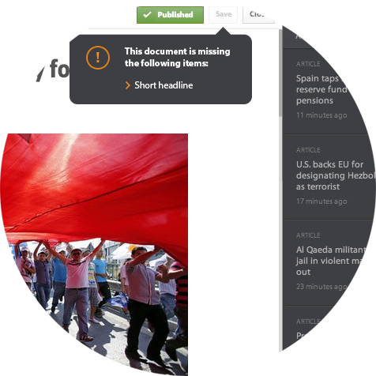
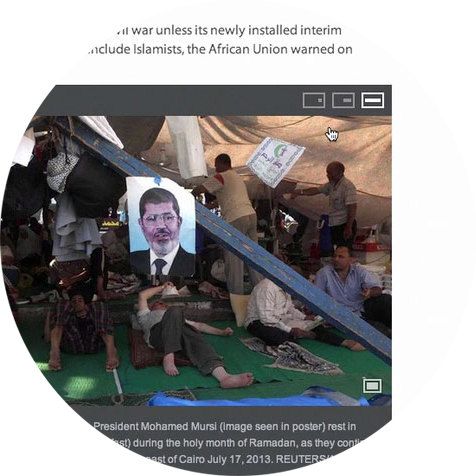
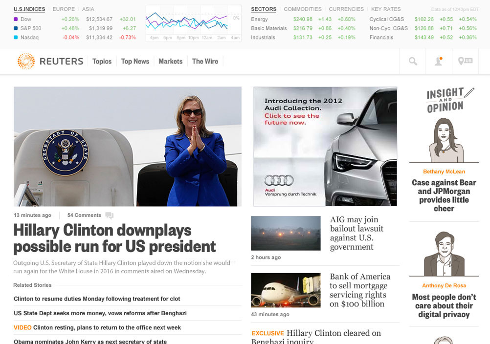

Content management
designed for the future.
I was tasked with designing a content management system that would consume data from a brand new API. The result was an editorial breakthrough that provided a consistently powerful and performant experience.
 Creative Lead
Creative Lead Front-end Lead
Front-end Lead
Create once.
Publish everywhere.
The Reuters CMS maintained strict separation between the content and it’s presentation. Why? Most people access news through more than one device. When editors focused on getting things looking right for the iPhone, it means something could have been wrong for desktop users. By making the data design agnostic, the CMS mananaged this complexity and improved quality.
-

Invisible Data
Pages were built using a single list of content. Editors simply placed the most important things at the top and templates handled the rest.
-

Smart Controls
The API required certain attributes for each content type. These requirements were revealed as editors worked and not in error message.
-

Simple Formatting
Creating beautiful articles or picture essays were a breeze. Photos, videos, and tweets were added inline without worrying about layout.
More than a text editor.
When a story breaks, the right tools make all the difference. The CMS included a fully-featured text editor and photo essay tool capable of complex formatting, inline media and links, and story management — all inside a beautiful and intuitive interface.

-
 Reusable UI
Reusable UI
The main components of the CMS — pages, images, articles, and photo essays — could be shown with a single click no matter what path the editor took.
-
 Drag and Drop Uploads
Drag and Drop Uploads
Media uploads were done with drag and drop and users were prompted after upload to complete any missing metadata. Why can't everything be that easy?
-
 Templating Done Right
Templating Done Right
Every page and content type was presentation agnostic so editors didn’t have to worry about data loss or organization when choosing a template.
-
 Full Test Suite
Full Test Suite
Speed is a feature. The CMS owed it’s stability and speed to a front-end suite of over 250 unit tests that covered everything from API calls to user interactions.

Time-tested.
Reuters editors were able to fully populate the new web experience in under four hours. That’s a productivity increase of over 400%.
-
Want to talk?
-
Done browsing?